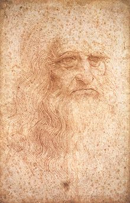
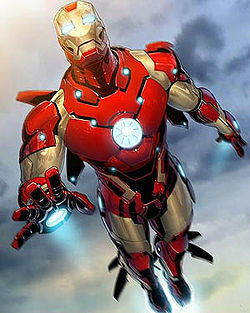
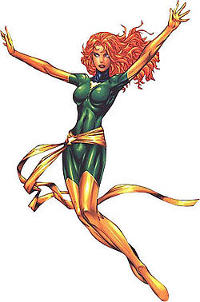
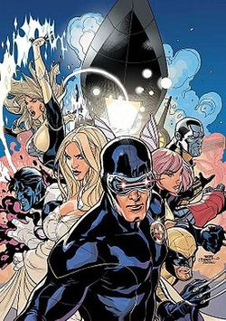
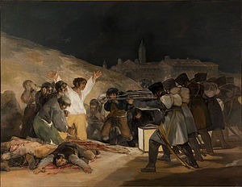

Leonardo da Vinci Leonardo di ser Piero da Vinci was an Italian Renaissance polymath: painter, sculptor, architect, musician…

Tony Stark Iron Man is an American fictional character, a superhero who appears in comic books published by Marvel Comics. The character was created

Jean Grey Jean Grey-Summers is a fictional character, a comic book superheroine who appears in comic books published by Marvel

X-Men The X-Men are a team of mutant superheroes in the Marvel Universe. They were created by writer Stan Lee and artist Jack Kirby
Hellfire Club (comics) The Hellfire Club is a fictional society within the Marvel Comics Universe that often comes into confrontation…

The Third of May 1808The Third of May 1808 (also known as El tres de mayo de 1808 en Madrid, or Los fusilamientos de la montaña del Príncipe Pío…